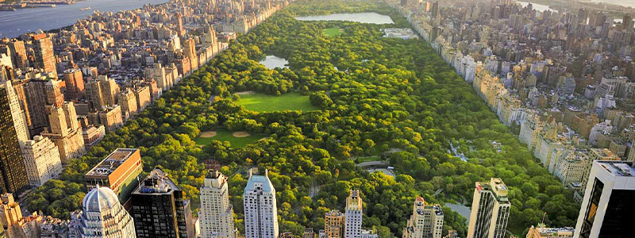
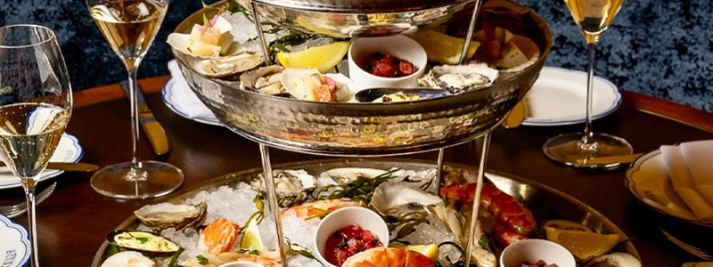
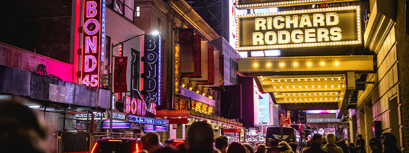
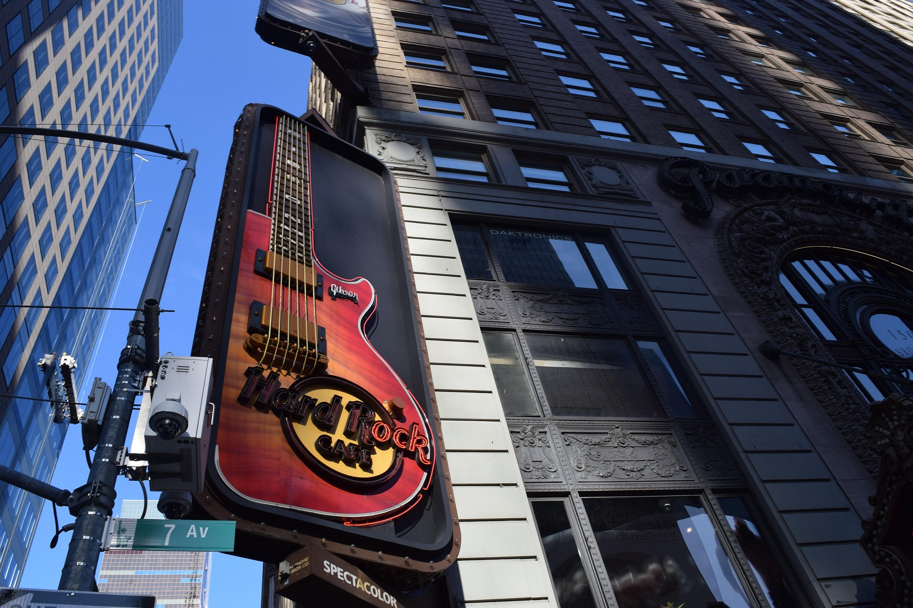
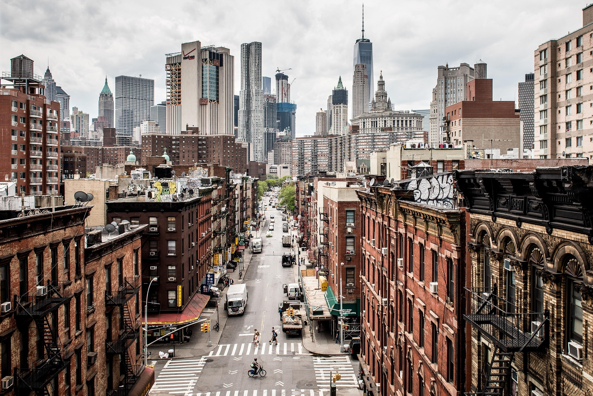
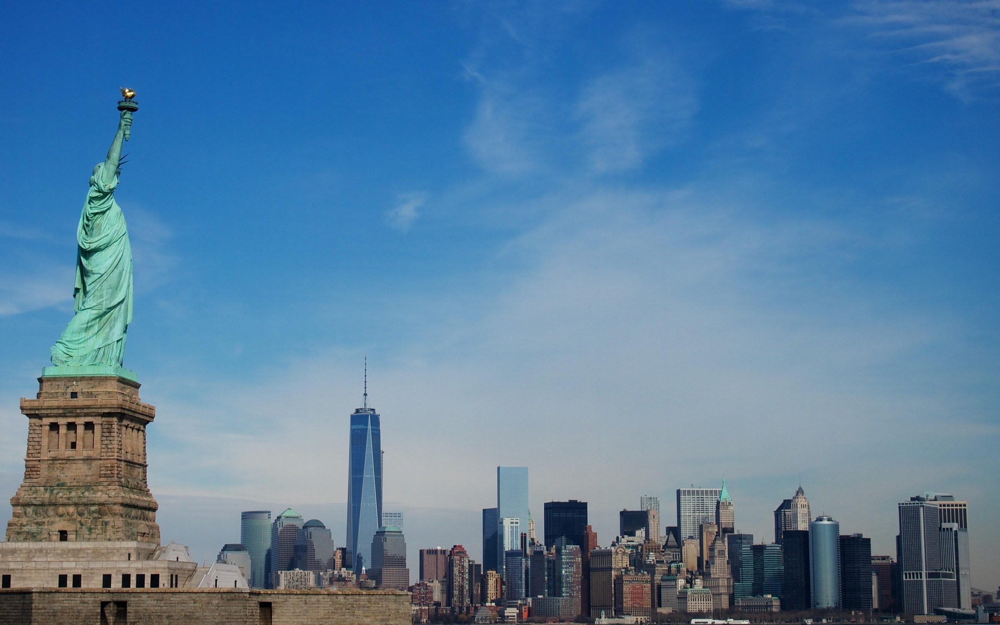
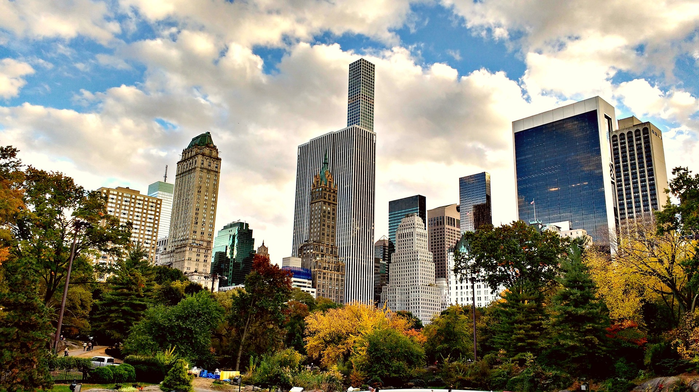
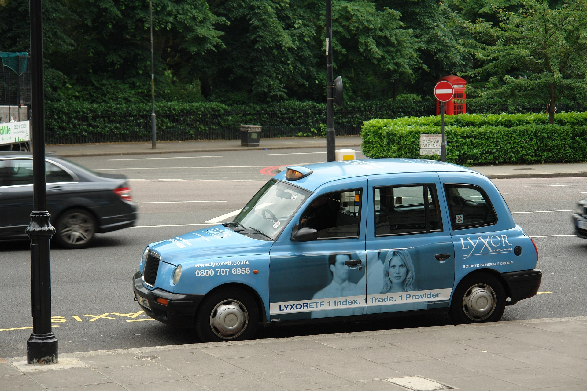

Recorre el Central Park
Disfruta de senderos, lagos, jardines y actividades al aire libre en el parque urbano más famoso de Nueva York.
Ver más
Disfruta de senderos, lagos, jardines y actividades al aire libre en el parque urbano más famoso de Nueva York.
Ver más
Descubre restaurantes de renombre y disfruta de menús especiales en uno de los eventos gastronómicos más importantes de la ciudad.
Ver más
Disfruta de musicales y espectáculos reconocidos mundialmente en el distrito teatral de Manhattan.
Ver más



